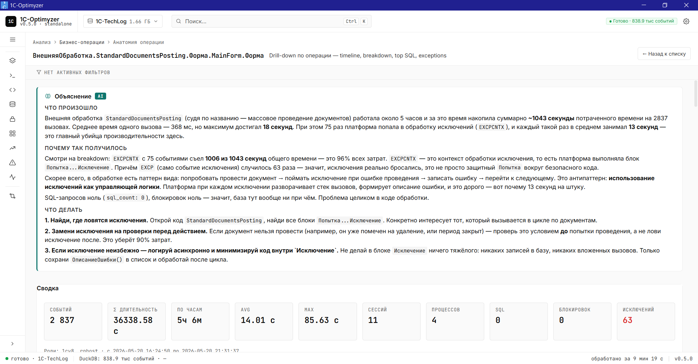
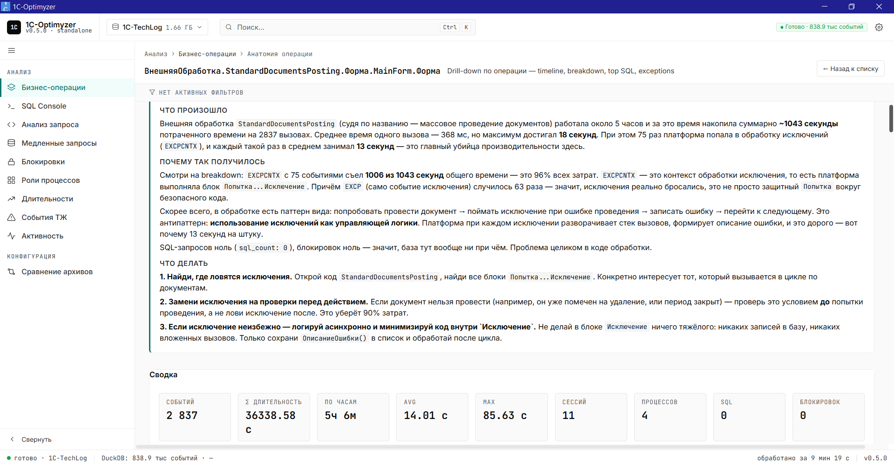
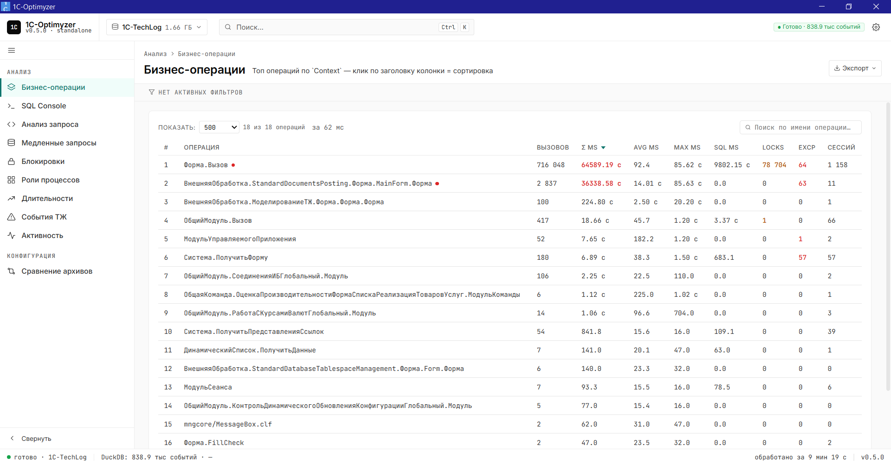
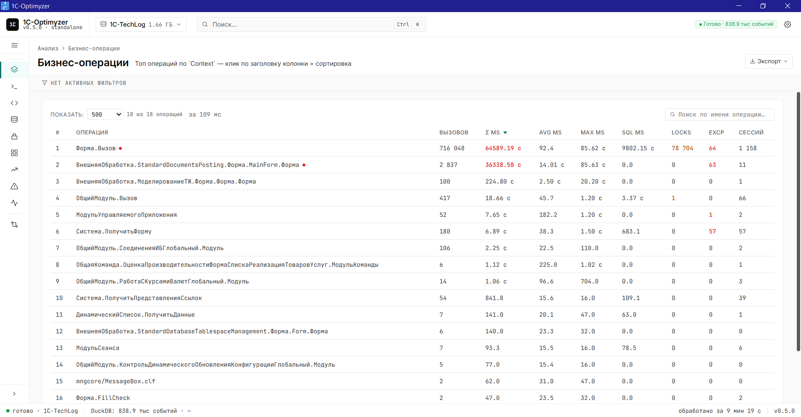
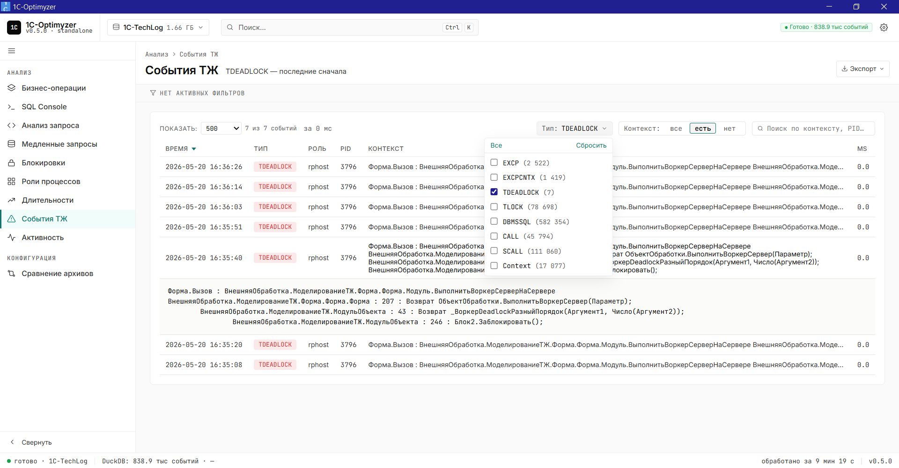
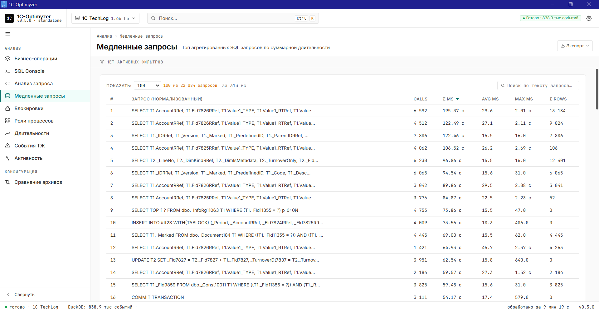

Загрузите архив технологического журнала. Получите готовое объяснение проблем на русском языке. Без серверов, без КИП-лицензии.
Windows· macOS· Linux· без регистрации

От архива в десятки гигабайт до конкретного плана действий — внутри одного desktop-приложения.
Загрузите архив с десятками миллионов событий. Внутренний движок DuckDB обрабатывает их за минуты, без серверной инфраструктуры. Парсятся все 8 типов событий 1С: CALL, SCALL, DBMSSQL, TLOCK, TDEADLOCK, EXCP, EXCPCNTX, Context.
Топ бизнес-операций, анатомия операции с timeline, анатомия дедлока с lock graph, медленные запросы, события ТЖ с фильтрацией, временные ряды блокировок, активность по часам — каждый разрез показывает свою грань проблемы.
Claude Sonnet работает поверх данных и объясняет проблемы на русском языке: что произошло, почему так получилось, что делать конкретно. Не «общие советы», а actionable план для разработчика.
Кликаете на медленную операцию — Claude разворачивает её внутри, читает данные, и пишет на русском объяснение: что не так, почему, и что менять в коде. Без знаний методики 1С:Эксперт.

Без bash-скриптов, без gawk/sed/grep, без 30 000 ₽/мес за ЦУП.
Перетащите папку с ТЖ-логами в окно приложения. Поддерживаются .log файлы любого размера, типичный архив 1–50 ГБ. Парсинг автоматический, занимает 1–15 минут в зависимости от размера. Архив 838 тысяч событий — 9 минут.

На главном экране — топ бизнес-операций по суммарной длительности. Красные значения сразу подсвечивают аномалии: 78 тысяч locks, 64 EXCP, 36 тысяч секунд на одну операцию. Один клик — анатомия операции.

Click на проблемную операцию открывает анатомию: timeline, breakdown по типам событий, top SQL внутри, related исключения и блокировки. Все данные на одном экране, без необходимости запоминать что было раньше.
Кнопка «Объяснить через AI» — Claude читает все данные операции и пишет на русском: что именно тормозит, почему, и какие конкретные изменения в коде нужны. Не общие советы — конкретный план для разработчика.
Десять разрезов одних и тех же данных. Каждый отвечает на свой вопрос.

7 типов событий — EXCP 2 522, TDEADLOCK 7, TLOCK 78 698, DBMSSQL 582 354. Серверная фильтрация мгновенная даже на миллионе записей. Поиск по контексту, drill-down по клику.

SQL-запросы агрегированы по нормализованному тексту. Видны calls, Σ длительность, средняя, максимум. Click — раскрытый запрос для копирования.
Если стандартных разрезов мало — пишите любой SQL поверх архива. Полный DuckDB engine с миллионом событий в индексе. Для опытных пользователей.
Бесплатная версия — для разовых проверок. Pro — для регулярной работы.
бесплатная версия
при оплате на год — 2 390 ₽/мес
Цена раннего доступа сохраняется для первых пользователей
Корпоративная лицензия. Скидка от количества мест, счёт юрлицу, email/Telegram-поддержка.